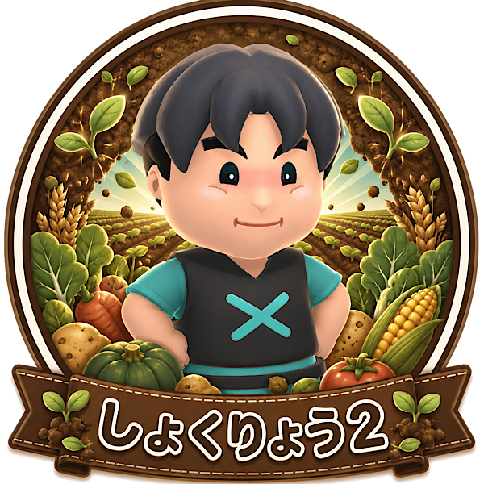

「畑を支える縁の下の力持ち」タイプ
あなたは、チームの土台を作る役割に向いているタイプ。
目立つ作業だけではなく、食材供給のように全体を支える仕事の大切さを理解できます。
ファームは地味に見えて、止まると全体が止まる重要な役割。
そこを任されても丁寧にこなせる、安定感のあるプレイヤーです。
しょくりょう2は畑を高速で耕せる、ファーム寄りのキャラです。
特に序盤の畑拡張や立ち上げをスムーズにできるため、食材供給の基盤作りに向いています。
活躍する場面はファーム中心ですが、その分、役割がハマった時の安心感があります。
チームの土台を支えることにやりがいを感じるあなたに合っています。